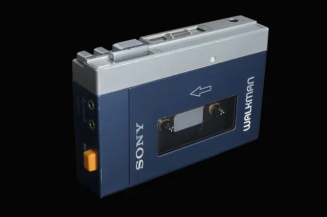
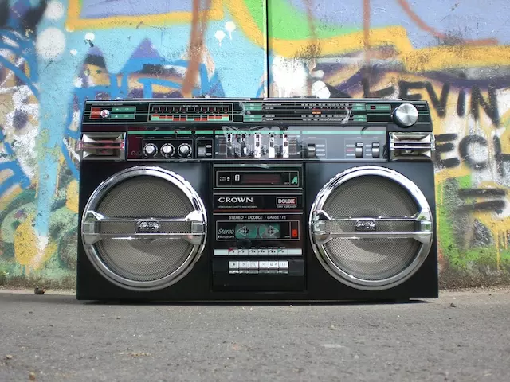

一点文章
Walkman 诞生 40 年，它如何塑造了一种边走边听的新行为方式？
“试一下这个，你不认为一个让你能够边走路边听歌的卡带机是个好主意吗？”井深大对盛田昭夫说。盛田昭夫回应说：“如果一个人自顾自地听自己的音乐，那么他可能会被认为是粗鲁的。”
在创始人希望能把音乐变得便携的要求下，索尼 1979 年 7 月 1 日推出一款叫做随身听（walkman）的产品。这款产品随后风靡世界，截至索尼 2008 财年末全球销量达到 3.85 亿台，相当于每 17 个人就拥有一台随身听。
形成私密空间并不是随身听的本意。初始被命名为 TPS-L2 的随身听型号配有两个耳机插孔，为的就是分享音乐。在耳机插孔旁边还有一个橘色的按钮，上方标注着 HOT LINE 的字样，按下这个热线按钮，机器会切换至内置的麦克风来收录环境声音，用户不摘下耳机，就可以听见周遭的情况或者与别人交流。
盛田昭夫的担忧或许根植于日本长期以来的集体主义国民性，所以他并没有意识到，不分享才是那个时代的主流。
二战之后，美国逐渐变得富足强盛。在这个背景下成长起来的年轻人有更多的闲钱消费娱乐，他们买唱片看电影。在城市化进程中，一批跻身城市的年轻人则通过自己的专业能力获得了中上层的阶级地位和待遇，他们也就是后来所说的“雅皮士”。
美国年轻人的心理状态也在悄然发生变化，在经历了对社会有着共同关怀的 1960 年代之后，人们愈发地把焦点转移到了个体，考虑的更多的不再是社会的利益，而是如何让自己过上好日子。汤姆·沃尔夫（Tom Wolfe）在他的长文《“自我的十年”和第三次大觉醒》（The "Me" Decade and the Third Great Awakening）中就把 1970 年代这种态度下的美国定义为了“自我的十年”。
随身听的出现，自然迎合了年轻人关注自我的诉求。

在美国的语境中的 Me generation 用来形容的就是关注自我的一代，它具体指涉的世代存在并不明确，有人说它是千禧一代的别称，也有人说战后的婴儿潮一代就与这个词挂上了钩，但按照字面意思来看，关注自我的世代都符合这个特征。
从这个意义上说，随身听是最早伴随和推动 Me generation 成长的娱乐产品之一。随身听开启了一个边走路边听歌的私人化体验时代。索尼也把这个概念当做卖点。早期的一则电视广告营造了这样一个场景：一个人揣着随身听头戴耳机的人一边走一边听歌。他的行为引起了人们的侧目：过马路的人蹲下来仔细查看他手里的装备，跳街舞的人停止了舞动，甚至有人因为看得出神而装上了路边的标牌。
“人们立即喜欢上了随身听”，《Personal Stereo》一书的作者 Rebecca Tuhus-Dubrow 在接受采访时表示。因为随身听带来了一种史无前例的亲密听歌体验，能在移动的同时让音乐环绕在耳边。
“他们把它比作电影，像是在看电影，或者演电影，又或者两者同时都有。他们把它比作药物，很多人谈论着它的魔力和毒性。它成为了现象级的产品。”
上市两个月，第一批随身听的 3 万台全部售罄。或许这会让索尼后悔当初的保守——盛田昭夫要求第一批上市 6 万台设备，心存疑虑的索尼把这个数字砍了一半。
在美国，对时尚弄潮的追逐或许也帮着推动了随身听的销售，虽然刚上市时的价格高达 200 美元，当时一个月平均房租也不过 280 美元，但它仍然卖得很火。歌手保罗·西蒙出席格莱美时让 随身听 也跟着他一起亮了个相，迪斯科女皇唐娜·桑默把随身听当做圣诞礼物送给了朋友们。许多媒体当时并不是派音乐或者科技记者报道 随身听，而是时尚记者。
TPS-L2 在海外上市时采用了不同的名字，瑞典的叫 Freestyle，英国的叫 Stowaway，美国的则是 Soundabout。在意识到随身听的英文原名 walkman 这个词汇传递出的力量后，索尼统一了名称，而随着 walkman 这个词 1986 年被收录进《牛津英语词典》，随身听也成为了一个深入人心的概念。
或许正如 walkman 这个名字所隐喻的那样，带上随身听的人类就不再是以前的人类。从随身听效应的概念被提出开始，一场关于随身听如何改变了人类的争论就此开始。
在随身听出现之前的很长一段时间内，音乐是一种具有社交属性的公共娱乐方式。
在音乐厅，一只庞大的交响乐队凑出乐曲。听众之间虽然不交流，但共同完成了聆听的体验。在家中，留声机或者晶体管收音机成提供了客厅或者卧室的背景音乐，一家人就着电台或者唱片中规定好的旋律交流谈话。在街头，堪称庞然大物的卡带录音机和外放收音机 Boom Box 制造出惹人恼火的高分贝，但它也促成了人们的交流，带动了街头文化的发展。

随身听则第一次将私密的听歌体验带到了人类的生活当中，而相反，戴上耳机则在 40 年后成为了向外传递了“生人勿扰”信号的一种方式。在《好奇心研究所》的关于“作为一个成年人，你都用什么结界来保证自己不被打扰？”的调查中，得票最高的回答就是“万能插耳机”。
早在1984年，随身听问世的五年之后，日本教授细川周平（細川周平，Hosokawa Shuhei）就通过自己的观察提出了“随身听效应”的概念。它可以看做是随身听作为一种媒介是如何改变世界的最初阐释。在他人眼中，戴着耳机的人处于一种注意力集中的状态，与对方交流可能会造成一种干扰。
细川周平采访过一群 18-22 岁的年轻人，通过一些列问题表达了自己对随身听带给人类的改变的担忧：携带随身听的人算不算人类？他们是否与现实脱节？眼睛和耳朵的关系是否发生了迅速变化？他们是否患有精神分裂？他们是否对人类未来的命运感到担忧？
年轻人并不完全愿意直面细川周平的疑问。正相反，沉浸在自我世界里的人们很是自得其乐：“这些问题已经过时了，这些与交流相关的问题属于 1960 和 1970 年代，1980 年代是一个完全不同的时代。这是一个自治的年代。用不了多久，你会看到家里的影碟机放各种电影，一卷磁带就能包含各种古典音乐，这会是一件令人愉悦的事。”
相比随时随地听歌，这个答案道出了随身听深受青睐更深层的原因，那便是它赋予人们对周遭空间的掌控，从而实现了一种自治。随身听最初让人们边走边听歌的广告攻势，想要传递的也是这样一种自由自治的概念。细川周平把随身听称作“行走的自治”。
随身听带来的这种自治表现在外部环境。传播学学者爱德华·霍尔在 1966 年的《The Hidden Dimension》一书中提出了空间关系学的概念，他把它定义为了人们利用空间作为一种专门的文化阐述相互关联的观察和理论。换句话说，人们周围的空间在人际交流时会发生作用。现在的人们已经很难想象几个各自都用手机听歌的人，会如同早期携带随身听的人们互相致意的场景。
这种效应也体现在了对音乐的控制和内心的情绪上。支持者则也乐意拥抱随身听构建起来的私人领域。安迪沃霍尔就说相比起汽车喇叭，自己更愿意聆听帕瓦罗蒂。
随身听把人们从被动接收音乐的状态中解放了出来，人们能够按照兴趣自由选择想听的音乐。人们通过混音的方式制作属于自己的歌单——随身听可以说是最早让人们找到自己 BGM 的装备。它因此还带动了磁带的销量：1983 年，磁带销量首次超过了黑胶。
在随身听上市之后的一段时间内，随身听甚至成为了某种亚文化的符号。《纽约时报》1981 年的一篇报道中记录了这样一个场景：一位路人在麦迪逊大道行走。迎面走来了一个女孩。女孩冲着他挥手打招呼，他则提了下耳机表示执意。他们并不认识，只是看到对方也带着随身听而心生默契。他对《纽约时报》说：“就像是梅赛德斯奔驰的车主在路上相遇时相互鸣笛。”
后来随身听还与 1980 年代的健身操结合了起来，人们得以一边听指示一边段炼。简·芳达还通过随身听推出了健身操指导特辑。
由于随身听和耳机构造出来的空间是内省的，套着耳机的人们情绪也会更加丰沛。一项由音频制造商 Sol Republic 发起的调查发现，人们戴着耳机时喜欢听一些鼓舞人心的旋律，比如生存者乐队的《Eye of the Tiger》、凯蒂·佩里的《Roar》以及坎耶·韦斯特的《Stronger》。在个人的小宇宙里，似乎大家都为自己刻画出了一条从困难中逆流而上的轨迹。
而和任何一种新兴的科技产品一样，随身听也会遇到来自保守人士的批评。有人把自恋和隔离这样的词语和随身听联系在了一起，并对它阻碍社交表示了忧虑，无论是对社会还是家庭。美国学者艾伦·布卢姆（Allan Bloom）相信，随身听的存在让阻止学生在学习时听歌变得不可能，地铁上不行，图书馆也不行。“只要他们携带随身听，他们就不会聆听伟大的传统想要表达什么。在长期运用之后，当他们摘下耳机，会发现自己已经成为了聋子。”
这些批评，只有放在一个更长的时间维度当中，才能被真正理解。本质上，他们都在追问这样一个问题，要是人们之间不再有任何交流，而只是沉浸在自己为自己创造的世界之中，那么这对于人类来说是好是坏？如同美国前总统伍德罗·威尔逊所说：“今天，人们之间的日常关系与大量不相关的事物、组织联系在一起，而不是和其他单独的个人……这将会是一个人类关系的新纪元，是人生舞台的新场景。”
索尼在推出随身听不久之后，就已经意识到人们并不想用随身听分享音乐。很快，这家公司就去除了随身听上的共享配置，切断了最后一个可以和他人一起聆听音乐的渠道。分享音乐也随之变成了一件极其私密的事情。如今，只有最亲密的人才能共享一副耳机，头靠着头在一起听同一首歌。
至于后来市面上的听歌设备新宠，从 iPod 到手机，他们也再没有想着重新将分享音乐的功能添加回来。